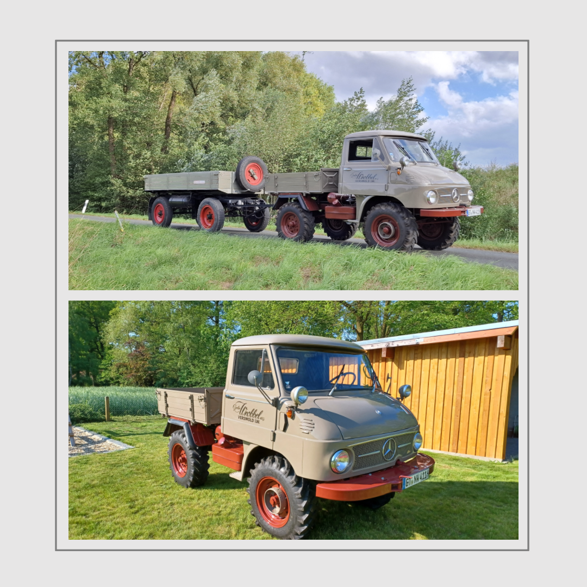

Dieser Unimog 411.117 wurde 1961 gebaut und ursprünglich mit einer Kabelziehwinde der Firma Lancier ausgeliefert.
Bis Anfang der 1990er‑Jahre war er beim örtlichen Straßenbaubetrieb im Einsatz, ausgestattet mit einem Kehrbesen.
Im Jahr 2004 übernahm ein bekannter Oldtimerfreund das Fahrzeug und begann eine umfangreiche Komplettrestaurierung, die sich über beeindruckende 16 Jahre erstreckte. Heute befindet sich der Mog in einem außergewöhnlich gepflegten Zustand.
← Zurück zur Übersicht